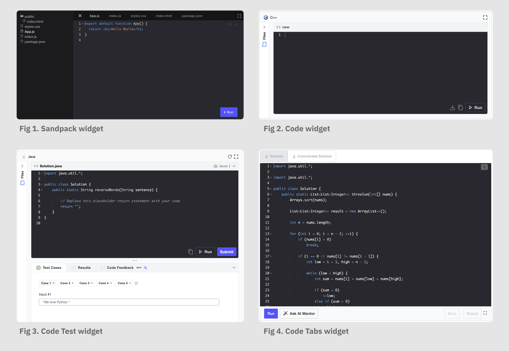
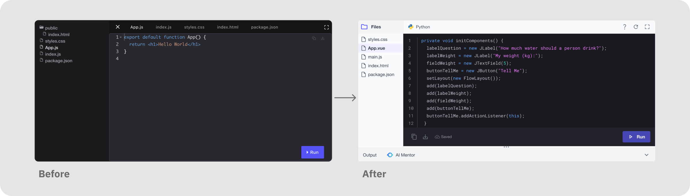
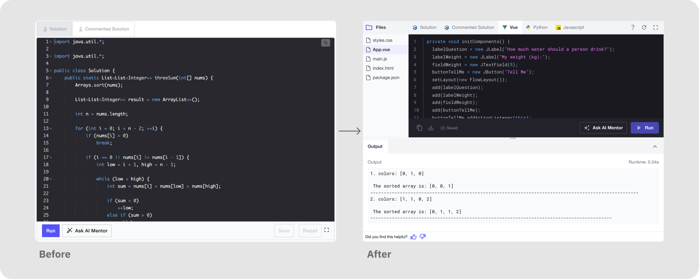
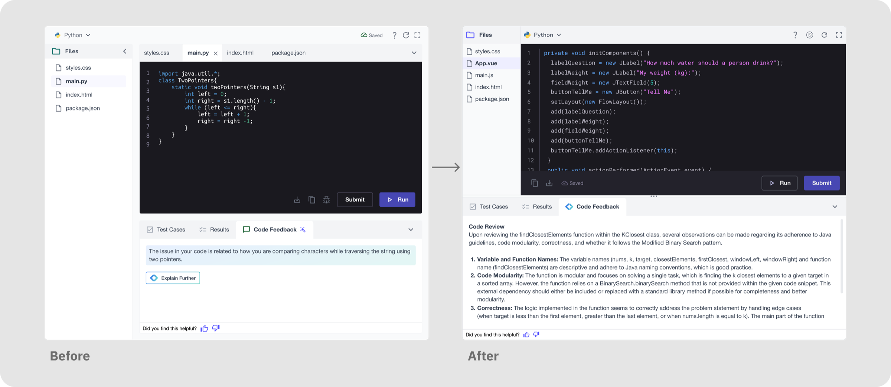
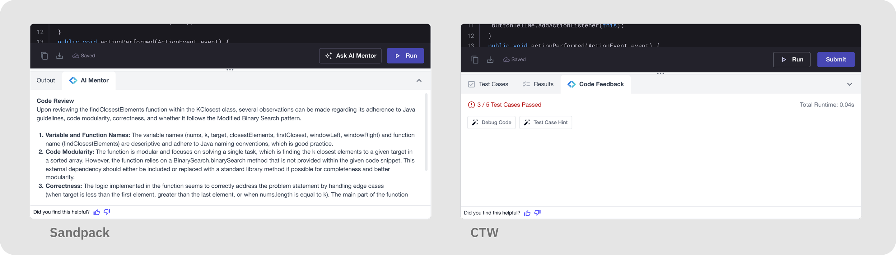

The project at a glance
Coding widgets are where developers spend most of their hands-on time on Educative. A learner working through a single course can move between Sandpack, Code, Code Tab, and Code Test inside one lesson.
Yet each widget looked and behaved like it belonged to a different product.
This initiative unified all four widgets under one shared anatomy. It also fixed where AI assistance lives: AI Mentor and Code Feedback now sit in the same place in every widget.
Four widgets, four different products
Consistency in developer interfaces isn't cosmetic. Every visual mismatch is a moment of re-orientation that pulls attention away from the code.
Developers hit these widgets constantly, so the fragmentation had real costs:

The visual inconsistencies, audited
Placing the four widgets side by side made the fragmentation obvious. Each had drifted into its own theme and interaction dialect:
What we aimed for
The aim was not to redesign four widgets four times. It was to define one visual and interaction system that all coding surfaces inherit.
That way any future widget, and any future AI capability, lands on a consistent foundation.
Clean, modern, minimal UI
Strip visual noise so the learner's code is the focus of every widget.
Shared design language
One theme, one header anatomy, one tab style, one file tree across all code widgets.
Clarity of action
Every action gets a consistent placement and icon, so intent is never ambiguous.
Design system token alignment
Replace hardcoded styling with tokens, to stay in sync with the platform.
One widget at a time, each setting up the next
Sandpack set the reference. Code Tab and Code adopted it. Code Test was then reconciled with it.
Starting point: Sandpack revamp
We started with Sandpack, the widget developers interact with most.
Code Test (CTW) served as the benchmark, since it already followed our design language most closely.
The revamped Sandpack introduced the anatomy every other widget would adopt.

Next steps: Code Tab & Code revamp
Code and Code Tab had nearly the same use cases, so they were handled simultaneously. The updated Sandpack widget was used as the reference point for visual hierarchy: the same header anatomy, Files panel, and action placement were carried over.

And lastly: Code Test revamp
Code Test had been revamped before this initiative, which is exactly why it served as the original benchmark.
But some use cases still had to be sorted, such as PAL and fullscreen mode.
Here the direction reversed. Sandpack's designs were referenced and implemented back into Code Test.

Consistent, discoverable AI assistance
The revamp wasn't only about visual parity. It prepared the widgets for AI.
Before, AI assistance appeared differently depending on the widget: an "Ask AI Mentor" button in one bottom bar, a Code Feedback tab elsewhere, with no shared placement or styling.
As part of the unification, AI touchpoints were treated as first-class citizens of the shared anatomy.

One shared widget anatomy
The core deliverable is a shared anatomy: a fixed set of regions and behaviours that every code widget composes from.
Once a learner has used one widget, every other widget is already familiar.
Header bar
Language identity (icon + name) on the left; state and utilities (Saved indicator, reset, fullscreen) on the right. Identical across Sandpack, Code, Code Tab, and Code Test.
Files panel
One collapsible Files panel pattern replaces the two divergent file trees. The same expand/collapse behaviour and file-row styling in every widget.
Tabs
File tabs and panel tabs share a single tab component style, ending Code Tab's separate design language.
Action row
Run, Submit, download, and copy have fixed positions, consistent button hierarchy (primary vs. secondary), and one icon set, giving clarity of action by placement alone.
Output & results
A standard Output panel with runtime for Code and Code Tab; Test Cases / Results / Code Feedback panels for Code Test. Both are built from the same panel and tab primitives.
Theming on tokens
All widgets are styled with design system tokens instead of hardcoded values, so widget UI evolves with the platform automatically.
Who benefited
Focus stays on the code
- Switching between widgets no longer requires re-orientation. The interface is now standard
- Actions are predictable by placement and style alone
A polished, scalable product surface
- The coding experience now reads as 1 single polished product
- Token-aligned widgets sit in visual harmony with the rest of the platform
One anatomy to design and build against
- New widget features are now designed against the shared anatomy
- Tokens replace hardcoded UI, so platform-level changes are automatic
- The benchmark loop leaves every widget on the same source patterns
What we took away, and where this goes
Benchmark, don't invent
Anchoring the revamp to the widget that already fit our design language best (Code Test) made every later decision faster and more defensible than starting from a blank canvas.
Sequence phases so they compound
Starting with the highest-interaction widget meant each phase inherited proven patterns, and the final phase closed the loop back to the original benchmark.
Design AI in, not on
Treating AI Mentor and Code Feedback as part of the widget anatomy rather than features stapled to it, made assistance consistent now and cheap to extend later.